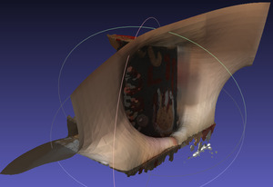
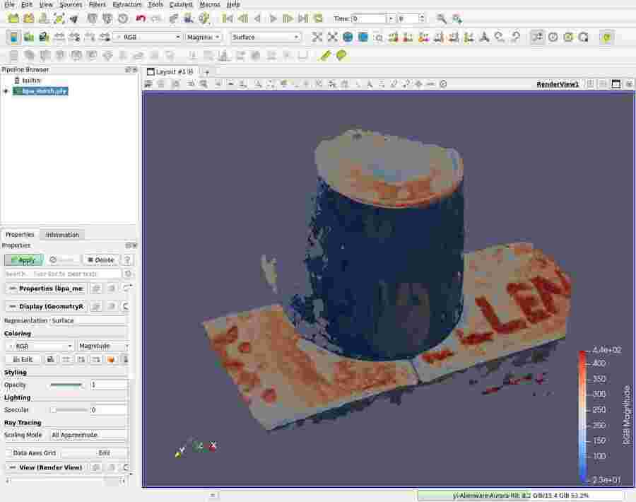
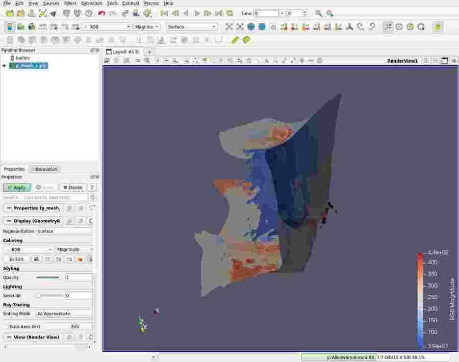

Table of contents
(Feature image from: 3D point set processing in python: a quick overview - Medium)
Read-Write
plyfile
(2024-03-27)
-
Read ply file (Polygon File Format): Docs
1 2 3 4 5 6 7import numpy from plyfile import PlyData, PlyElement with open('/home/yi/Downloads/DTU_SampleSet/MVS Data/Points/stl/stl001_total.ply', 'rb') as f: plydata = PlyData.read(f) np.array(plydata.elements[0].data)[0]Output:
1(49.720848, -54.11675, 672.04956, 0.9649841, -0.08213623, -0.24911714, 102, 70, 44)The returned tuple is a single data, whose datatype has 9 members. I want to only take the first 3 values: x,y,z. But it’s not allowed to use syntax like
[:3]to slice it. -
Write a ply file
Example in 3DGS:
Read Numer of Points
-
Problems:
- Given a
.plyfile, obtain the number of pints
- Given a
Open3D
(2024-03-27)
-
Compare
open3d,plyfile,pyntcloud, andmeshio-
open3d: has good docs. How To Read and Write ply File in Python - Jdhao1pip install open3d -
plyfile: lightweight. Could be slow when reading a large ply file. Python plyfile vs pymesh - SO
-
Read
-
Various file formats
-
Open3d read .ply file
1 2 3import open3d as o3d pcd = o3d.io.read_point_cloud("/home/yi/Downloads/DTU_SampleSet/MVS Data/Points/stl/stl001_total.ply", format='ply')
::: aside
- References:
- Docs :::
-
-
Open3D converts pcd to np.array and visualize it: Docs
1 2 3 4import numpy as np xyz_load = np.asarray(pcd.points) # (2880879, 3) print(f'xyz_load:\n {xyz_load}') o3d.visualization.draw_geometries([pcd])Setting camera directions:
1 2 3 4lookat = np.array([[500.],[500.], [500.]]) up = np.array([[0.853452],[-0.447425], [0.267266]]) front = np.array([[0.417749],[0.893913],[0.162499]]) o3d.visualization.draw_geometries([pcd], width=500, height=500, lookat=lookat, up=up, front=front, zoom=1.0)-
lookat is the window center. set_lookat(), set_front(), set_up() usage of VisualControl #2139

Visualize
-
Open3D visualizes a point cloud from a specified camera pose:
1 2 3 4 5 6 7 8 9 10 11 12 13 14 15 16 17vis = o3d.visualization.VisualizerWithKeyCallback() vis.create_window() vis.add_geometry(pcd) vis.get_render_option().background_color = np.asarray([1,1,1]) view_ctl = vis.get_view_control() w2c = np.array([[-0.636298, -0.727666, 0.25618, -143.534], [0.0315712, 0.307237, 0.951109, -579.42], [-0.770797, 0.613276, -0.172521, 759.831], [ 0.0, 0.0, 0.0, 1.0]]) # cam 38 cam = view_ctl.convert_to_pinhole_camera_parameters() cam.extrinsic = w2c view_ctl.convert_from_pinhole_camera_parameters(cam, True) vis.run() vis.destroy_window()- Note:
crete_window()must precedesadd_geometry()
- Note:
-
Options for rendering
(2024-07-08)
-
Set
zoomof the visualizer. r1-Docs1view_ctl.set_zoom(0.14) -
Set window size r2:
1 2vis = o3d.visualization.VisualizerWithKeyCallback() vis.create_window(width=800, height=800) -
Capture the current window:
1 2 3# vis.run() vis.capture_screen_image("PC01_upPC_240709.png", do_render=True) vis.destroy_window()
::: aside
-
References: {{{
- Docs (Found in DDG:open3D set camera distance No luck. ➔ DDG: set fov ➔ Tutorial ➔ DDG: set zoom)
- Found in DDG
}}} :::
-
Shortcuts
-
Open3D Shortcut keysr1-Docs
(2024-07-10)
- Press
Hwill show help message in terminal or output cell.
::: aside
- References:
- Visualization — Open3D 0.9.0 documentation Search by “open3d visualizer keyboard behaviors collection” at DDG :::
Help info (0.18)
1 2 3 4 5 6 7 8 9 10 11 12 13 14 15 16 17 18 19 20 21 22 23 24 25 26 27 28 29 30 31 32 33 34 35 36 37 38 39 40 41 42 43 44 45 46 47 48 49 50 51 52 53 54-- Mouse view control -- Left button + drag : Rotate. Ctrl + left button + drag : Translate. Wheel button + drag : Translate. Shift + left button + drag : Roll. Wheel : Zoom in/out. -- Keyboard view control -- [/] : Increase/decrease field of view. R : Reset view point. Ctrl/Cmd + C : Copy current view status into the clipboard. Ctrl/Cmd + V : Paste view status from clipboard. -- General control -- Q, Esc : Exit window. H : Print help message. P, PrtScn : Take a screen capture. D : Take a depth capture. O : Take a capture of current rendering settings. Alt + Enter : Toggle between full screen and windowed mode. -- Render mode control -- L : Turn on/off lighting. +/- : Increase/decrease point size. Ctrl + +/- : Increase/decrease width of geometry::LineSet. N : Turn on/off point cloud normal rendering. S : Toggle between mesh flat shading and smooth shading. W : Turn on/off mesh wireframe. B : Turn on/off back face rendering. I : Turn on/off image zoom in interpolation. T : Toggle among image render: no stretch / keep ratio / freely stretch. -- Color control -- 0..4,9 : Set point cloud color option. 0 - Default behavior, render point color. 1 - Render point color. 2 - x coordinate as color. 3 - y coordinate as color. 4 - z coordinate as color. 9 - normal as color. Ctrl + 0..4,9: Set mesh color option. 0 - Default behavior, render uniform gray color. 1 - Render point color. 2 - x coordinate as color. 3 - y coordinate as color. 4 - z coordinate as color. 9 - normal as color. Shift + 0..4 : Color map options. 0 - Gray scale color. 1 - JET color map. 2 - SUMMER color map. 3 - WINTER color map. 4 - HOT color map. - Press
Other Libs
-
pyminiply claims that it’s faster than open3d.
(2024-05-10)
-
zishun/awesome-geometry-processing
(Found by Perplexity: “Compare 3 libraries: CGAL (Computational Geometry Algorithms Library), Open3D, and PointCloudLibrary (PCL)”)
Wis3D
(2024-04-07)
PCL
-
PCL Tutorial(2014) Jeff Delmerico
- He have projects on volumetric reconstruction
-
Jeff’s repo: jeffdelmerico/pointcloud_tutorial
Compile on Ubu 22.04 ✅
(2024-05-11)
Reference: Docs
System specs:
- Ubuntu 22.04.4 LTS x86_64, Kernel: 6.5.0-28-generic,
- gcc (Ubuntu 9.5.0-1ubuntu1~22.04) 9.5.0
- Cudatoolkit: cuda_11.6.r11.6/compiler.30794723_0
- Nvidia Driver: 545.23.08
- GPU: 3090Ti
- CPU: AMD Ryzen 7 5700X (16) @ 3.400GHz
- Board: X570 AORUS PRO WIFI -CF. Memory: 16GB.
Steps:
-
Download source.tar.gz (pcl-1.14.1)
Uncompress:
tar xvf source.tar.gz -
Build:
1 2cd pcl cmake -B ./build -DCMAKE_BUILD_TYPE=RelWithDebInfo -
Compile and install:
|
|
The library is installed in /usr/lib and /usr/include/
Install paths
{{{
|
|
}}}
(2024-06-25)
I can’t cmake the project: dtcMLOps/upsamplingCloudPCL,
with errors shown below.
Error:
{{{
|
|
}}}
Attempts:
-
I installed
libvtk9-dev:sudo aptitude install libvtk9-devandsudo apt-get install libpcap-dev libusb-1.0-0-devCompile again.
-
And I
Enable C language: Add the following line near the top of your CMakeLists.txt file, right after the project() command:
enable_language(C)(Following the instrction of Claude3.5 Sonnet)Error:
1 2 3 4 5 6 7 8 9 10 11 12 13 14 15 16 17 18 19 20 21 22 23 24 25 26 27 28 29 30 31 32 33 34 35 36 37 38 39 40 41 42 43 44 45 46 47 48 49 50 51 52 53 54 55 56 57 58 59 60 61 62 63 64 65 66 67 68 69 70 71 72 73 74 75 76 77 78 79 80 81 82 83 84 85 86 87 88 89 90 91 92 93 94 95 96 97 98 99 100 101 102 103 104 105 106 107 108 109 110 111 112 113 114 115 116 117 118 119 120 121 122 123 124 125 126 127 128 129 130 131 132 133 134(base) zichen@homepc:~/Downloads/upsamplingCloudPCL$ cmake -B build -- The CXX compiler identification is GNU 9.5.0 -- Detecting CXX compiler ABI info -- Detecting CXX compiler ABI info - done -- Check for working CXX compiler: /usr/bin/c++ - skipped -- Detecting CXX compile features -- Detecting CXX compile features - done -- The C compiler identification is GNU 9.5.0 -- Detecting C compiler ABI info -- Detecting C compiler ABI info - done -- Check for working C compiler: /usr/bin/cc - skipped -- Detecting C compile features -- Detecting C compile features - done ========================================= Project: upsampling_cloud ========================================= CMake Warning (dev) at /usr/local/share/pcl-1.14/Modules/FindFLANN.cmake:45 (find_package): Policy CMP0144 is not set: find_package uses upper-case <PACKAGENAME>_ROOT variables. Run "cmake --help-policy CMP0144" for policy details. Use the cmake_policy command to set the policy and suppress this warning. CMake variable FLANN_ROOT is set to: /usr For compatibility, find_package is ignoring the variable, but code in a .cmake module might still use it. Call Stack (most recent call first): /usr/local/share/pcl-1.14/PCLConfig.cmake:250 (find_package) /usr/local/share/pcl-1.14/PCLConfig.cmake:295 (find_flann) /usr/local/share/pcl-1.14/PCLConfig.cmake:551 (find_external_library) CMakeLists.txt:30 (find_package) This warning is for project developers. Use -Wno-dev to suppress it. -- Checking for module 'flann' -- Found flann, version 1.9.1 -- Found FLANN: /usr/lib/x86_64-linux-gnu/libflann_cpp.so -- FLANN found (include: /usr/include, lib: /usr/lib/x86_64-linux-gnu/libflann_cpp.so) -- Found OpenMP_CXX: -fopenmp (found version "4.5") -- Found OpenMP: TRUE (found version "4.5") found components: CXX -- Found Pcap: /usr/lib/x86_64-linux-gnu/libpcap.so -- Found ZLIB: /usr/lib/x86_64-linux-gnu/libz.so (found version "1.2.11") -- Found PNG: /usr/lib/x86_64-linux-gnu/libpng.so (found version "1.6.37") CMake Error at /usr/local/share/pcl-1.14/PCLConfig.cmake:335 (string): string sub-command REGEX, mode REPLACE needs at least 6 arguments total to command. Call Stack (most recent call first): /usr/local/share/pcl-1.14/PCLConfig.cmake:548 (find_external_library) CMakeLists.txt:30 (find_package) -- Checking for module 'libusb-1.0' -- Found libusb-1.0, version 1.0.25 -- Found libusb: /usr/lib/x86_64-linux-gnu/libusb-1.0.so -- Found Qhull version 8.0.2 CMake Error at /usr/local/share/pcl-1.14/PCLConfig.cmake:335 (string): string sub-command REGEX, mode REPLACE needs at least 6 arguments total to command. Call Stack (most recent call first): /usr/local/share/pcl-1.14/PCLConfig.cmake:548 (find_external_library) CMakeLists.txt:30 (find_package) -- Found PCL_COMMON: /usr/local/lib/libpcl_common.so -- Found PCL_KDTREE: /usr/local/lib/libpcl_kdtree.so -- Found PCL_OCTREE: /usr/local/lib/libpcl_octree.so -- Found PCL_SEARCH: /usr/local/lib/libpcl_search.so -- Found PCL_SAMPLE_CONSENSUS: /usr/local/lib/libpcl_sample_consensus.so -- Found PCL_FILTERS: /usr/local/lib/libpcl_filters.so -- Found PCL_2D: /usr/local/include/pcl-1.14 -- Found PCL_GEOMETRY: /usr/local/include/pcl-1.14 -- Found PCL_IO: /usr/local/lib/libpcl_io.so -- Found PCL_FEATURES: /usr/local/lib/libpcl_features.so -- Found PCL_ML: /usr/local/lib/libpcl_ml.so -- Found PCL_SEGMENTATION: /usr/local/lib/libpcl_segmentation.so -- Found PCL_SURFACE: /usr/local/lib/libpcl_surface.so -- Found PCL_REGISTRATION: /usr/local/lib/libpcl_registration.so -- Found PCL_KEYPOINTS: /usr/local/lib/libpcl_keypoints.so -- Found PCL_TRACKING: /usr/local/lib/libpcl_tracking.so -- Found PCL_RECOGNITION: /usr/local/lib/libpcl_recognition.so -- Found PCL_STEREO: /usr/local/lib/libpcl_stereo.so -- PCL status: -- version: 1.14.1 -- directory: /usr/local/share/pcl-1.14 CMake Warning (dev) at /usr/local/share/cmake-3.28/Modules/FetchContent.cmake:1331 (message): The DOWNLOAD_EXTRACT_TIMESTAMP option was not given and policy CMP0135 is not set. The policy's OLD behavior will be used. When using a URL download, the timestamps of extracted files should preferably be that of the time of extraction, otherwise code that depends on the extracted contents might not be rebuilt if the URL changes. The OLD behavior preserves the timestamps from the archive instead, but this is usually not what you want. Update your project to the NEW behavior or specify the DOWNLOAD_EXTRACT_TIMESTAMP option with a value of true to avoid this robustness issue. Call Stack (most recent call first): cmake/functions.cmake:5 (FetchContent_Declare) CMakeLists.txt:40 (fetch_project) This warning is for project developers. Use -Wno-dev to suppress it. CMake Warning (dev) at build/_deps/cloudparse-src/CMakeLists.txt:18 (find_package): Policy CMP0074 is not set: find_package uses <PackageName>_ROOT variables. Run "cmake --help-policy CMP0074" for policy details. Use the cmake_policy command to set the policy and suppress this warning. CMake variable PCL_ROOT is set to: /usr/local For compatibility, CMake is ignoring the variable. This warning is for project developers. Use -Wno-dev to suppress it. -- PCL status: -- version: 1.14.1 -- directory: /usr/local/share/pcl-1.14 CMake Warning (dev) at /usr/local/share/cmake-3.28/Modules/FetchContent.cmake:1331 (message): The DOWNLOAD_EXTRACT_TIMESTAMP option was not given and policy CMP0135 is not set. The policy's OLD behavior will be used. When using a URL download, the timestamps of extracted files should preferably be that of the time of extraction, otherwise code that depends on the extracted contents might not be rebuilt if the URL changes. The OLD behavior preserves the timestamps from the archive instead, but this is usually not what you want. Update your project to the NEW behavior or specify the DOWNLOAD_EXTRACT_TIMESTAMP option with a value of true to avoid this robustness issue. Call Stack (most recent call first): cmake/functions.cmake:5 (FetchContent_Declare) CMakeLists.txt:45 (fetch_project) This warning is for project developers. Use -Wno-dev to suppress it. ========================================= Project: upsampling_cloud COMPILED WITH CMAKE 3.28.0-rc3 ========================================= -- Configuring incomplete, errors occurred! -
Then I suspect the pcl version mismatch, as that project used 1.12.1. So I want to find the previous verions in their “Downloads” and found there is an option for linux:
sudo apt install libpcl-dev.But my Ubuntu 22.04 run into errors:
1 2 3 4 5 6 7 8 9 10 11 12 13 14 15 16(base) zichen@homepc:~/Downloads/upsamplingCloudPCL$ dpkg -l | grep pcl (base) zichen@homepc:~/Downloads/upsamplingCloudPCL$ (base) zichen@homepc:~/Downloads/upsamplingCloudPCL$ sudo apt install libpcl-dev Reading package lists... Done Building dependency tree... Done Reading state information... Done Some packages could not be installed. This may mean that you have requested an impossible situation or if you are using the unstable distribution that some required packages have not yet been created or been moved out of Incoming. The following information may help to resolve the situation: The following packages have unmet dependencies: libqt5webkit5-dev : Depends: libqt5webkit5 (= 5.212.0~alpha4-15ubuntu1) but it is not installable qttools5-dev : Depends: qttools5-dev-tools (= 5.15.3-1) E: Unable to correct problems, you have held broken packages.So I try to install it on Ubuntu 20.04. It can be installed, but the error for cmake the upsamplingCloudPCL persists.
(2024-06-27)
Recompile pcl after vtk installed.
-
Install dependencies:
- If
vtkorlibopenni-devare missing,ccmake ..will stop at the log page (pressl), where you can see which packages are not found. - Set env:
export VTK_DIR=~/vtk/build
1 2 3 4cd build ccmake -DCMAKE_BUILD_TYPE=RelWithDebInfo .. make -j8 sudo make install - If
-
Compiling with CUDA and GPU options turned on under cuda-11.8 fails:
cuda header cannot found:
1 2 3 4 5 6 7 8 9 10 11 12 13 14 15 16 17 18 19 20[ 51%] Built target pcl_outofcore [ 51%] Building CXX object gpu/kinfu/tools/CMakeFiles/pcl_record_tsdfvolume.dir/record_tsdfvolume.cpp.o [ 51%] Building CXX object gpu/kinfu/tools/CMakeFiles/pcl_record_tsdfvolume.dir/capture.cpp.o [ 51%] Building CXX object gpu/kinfu/tools/CMakeFiles/pcl_kinfu_app.dir/evaluation.cpp.o [ 51%] Linking CXX shared library ../lib/libpcl_surface.so In file included from /home/zichen/Downloads/pcl/gpu/kinfu/tools/../src/internal.h:42, from /home/zichen/Downloads/pcl/gpu/kinfu/tools/kinfu_app.cpp:84: /home/zichen/Downloads/pcl/gpu/kinfu/tools/../src/safe_call.hpp:40:10: fatal error: cuda_runtime_api.h: No such file or directory 40 | #include "cuda_runtime_api.h" | ^~~~~~~~~~~~~~~~~~~~ compilation terminated. make[2]: *** [gpu/kinfu/tools/CMakeFiles/pcl_kinfu_app.dir/build.make:76: gpu/kinfu/tools/CMakeFiles/pcl_kinfu_app.dir/kinfu_app.cpp.o] Error 1 make[2]: *** Waiting for unfinished jobs.... [ 51%] Building CXX object tools/CMakeFiles/pcl_viewer.dir/pcd_viewer.cpp.o In file included from /home/zichen/Downloads/pcl/gpu/kinfu/tools/../src/internal.h:42, from /home/zichen/Downloads/pcl/gpu/kinfu/tools/record_tsdfvolume.cpp:52: /home/zichen/Downloads/pcl/gpu/kinfu/tools/../src/safe_call.hpp:40:10: fatal error: cuda_runtime_api.h: No such file or directory 40 | #include "cuda_runtime_api.h" | ^~~~~~~~~~~~~~~~~~~~ compilation terminated. -
Recompiling pcl without turning on CUDA and GPU options succeeds.
Compile on Ubu 20.04 ✅
Compile PCL for leveraging Nvidia GPU: Tutorials
I’m concerning GPU version is not good for debugging.
(2024-05-13)
System info:
- OS: Ubuntu 20.04.6 LTS x86_64, Kernel: 5.15.0-105-generic
- CPU: Intel i7-9700 (8) @ 4.700GHz
- GPU: NVIDIA GeForce GTX 1050 Ti; GPU: Intel UHD Graphics 630
- Memory: 5010MiB / 15809MiB
- gcc (Ubuntu 9.4.0-1ubuntu1~20.04.2) 9.4.0
- Cudatoolkit: Cuda compilation tools, release 11.6, V11.6.55. Build cuda_11.6.r11.6/compiler.30794723_0
|
|
Open GPU options in ccmake, which is an interactive interface
How do I install ccmake? - SE
|
|
I turned ON 2 options: BUILD_CUDA and BUILD_GPU
Press c again to finish configurations and then press g to generate makefiles.
|
|
Fix install vtk
(2024-06-25)
I can’t cmake the project: dtcMLOps/upsamplingCloudPCL on alienware. I though I missed some dependencies.
Install (developer-version) dependencies:
-
opengl: How to Install OpenGL Library on Ubuntu 20.04 LTS (Focal Fossa) DDG
1 2 3sudo apt update && sudo apt upgrade sudo apt install freeglut3-dev libpcap-dev libusb-1.0-0-dev dpkg -L freeglut3-dev -
vtk: Getting Started-vtk
1sudo apt install libvtk7-dev
-
After them, I didn’t compile the pcl again. I found there a pre-built
libpcl-devprovided for linux, which is said “the recommended installation method” Download page1(base) yi@yi-Alienware-Aurora-R8:~$ sudo apt install libpcl-devThe version is 1.10.0
1 2 3 4 5 6 7 8 9 10 11 12 13 14 15 16 17 18 19 20 21 22 23(base) yi@yi-Alienware-Aurora-R8:~$ dpkg -l | grep pcl ii libdapclient6v5:amd64 3.20.5-1 amd64 Client library for the Network Data Access Protocol ii libpcl-apps1.10:amd64 1.10.0+dfsg-5ubuntu1 amd64 Point Cloud Library - apps library ii libpcl-common1.10:amd64 1.10.0+dfsg-5ubuntu1 amd64 Point Cloud Library - common library ii libpcl-dev 1.10.0+dfsg-5ubuntu1 amd64 Point Cloud Library - development files ii libpcl-features1.10:amd64 1.10.0+dfsg-5ubuntu1 amd64 Point Cloud Library - features library ii libpcl-filters1.10:amd64 1.10.0+dfsg-5ubuntu1 amd64 Point Cloud Library - filters library ii libpcl-io1.10:amd64 1.10.0+dfsg-5ubuntu1 amd64 Point Cloud Library - I/O library ii libpcl-kdtree1.10:amd64 1.10.0+dfsg-5ubuntu1 amd64 Point Cloud Library - kdtree library ii libpcl-keypoints1.10:amd64 1.10.0+dfsg-5ubuntu1 amd64 Point Cloud Library - keypoints library ii libpcl-ml1.10:amd64 1.10.0+dfsg-5ubuntu1 amd64 Point Cloud Library - ml library ii libpcl-octree1.10:amd64 1.10.0+dfsg-5ubuntu1 amd64 Point Cloud Library - octree library ii libpcl-outofcore1.10:amd64 1.10.0+dfsg-5ubuntu1 amd64 Point Cloud Library - outofcore library ii libpcl-people1.10:amd64 1.10.0+dfsg-5ubuntu1 amd64 Point Cloud Library - people library ii libpcl-recognition1.10:amd64 1.10.0+dfsg-5ubuntu1 amd64 Point Cloud Library - recognition library ii libpcl-registration1.10:amd64 1.10.0+dfsg-5ubuntu1 amd64 Point Cloud Library - registration library ii libpcl-sample-consensus1.10:amd64 1.10.0+dfsg-5ubuntu1 amd64 Point Cloud Library - sample consensus library ii libpcl-search1.10:amd64 1.10.0+dfsg-5ubuntu1 amd64 Point Cloud Library - search library ii libpcl-segmentation1.10:amd64 1.10.0+dfsg-5ubuntu1 amd64 Point Cloud Library - segmentation library ii libpcl-stereo1.10:amd64 1.10.0+dfsg-5ubuntu1 amd64 Point Cloud Library - stereo library ii libpcl-surface1.10:amd64 1.10.0+dfsg-5ubuntu1 amd64 Point Cloud Library - surface library ii libpcl-tracking1.10:amd64 1.10.0+dfsg-5ubuntu1 amd64 Point Cloud Library - tracking library ii libpcl-visualization1.10:amd64 1.10.0+dfsg-5ubuntu1 amd64 Point Cloud Library - visualization libraryAnd
pcl-1.10can be found:1 2(base) yi@yi-Alienware-Aurora-R8:~$ whereis pcl-1.10 pcl-1: /usr/include/pcl-1.10- I know its name beacuse I saw the folder
pcl-1.10in/usr/include. - I was inspire by this anwser: Ubuntu 20.04 can’t find PCL because of incorrect include directory after installing it by sudo apt install libpcl-dev ( Found in DDG )
- I know its name beacuse I saw the folder
-
cmake has no error:
cmake output
1 2 3 4 5 6 7 8 9 10 11 12 13 14 15 16 17 18 19 20 21 22 23 24 25 26 27 28 29 30 31 32 33 34 35 36 37 38 39 40 41 42 43 44 45 46 47 48 49 50 51 52 53 54 55 56 57 58 59 60 61 62 63 64 65 66 67 68 69 70 71 72 73 74 75 76 77 78 79 80 81 82 83 84 85 86 87 88 89 90 91 92 93 94 95 96 97 98 99 100 101 102 103 104 105 106 107 108 109 110 111 112 113 114 115 116 117 118 119 120 121 122 123 124 125 126 127 128 129 130 131 132 133 134 135 136 137 138 139 140 141 142 143 144 145 146 147 148 149 150 151 152 153 154 155 156 157 158 159 160 161 162 163 164 165 166 167 168 169 170 171 172 173 174 175 176 177 178 179 180 181 182 183 184 185 186 187 188 189 190 191 192 193 194 195 196 197 198 199 200 201 202 203 204 205 206 207 208 209 210 211 212 213 214 215 216 217 218 219 220 221 222 223 224 225 226 227 228 229 230 231(base) yi@yi-Alienware-Aurora-R8:~/Downloads/upsamplingCloudPCL$ cmake -Bbuild -- The CXX compiler identification is GNU 9.4.0 -- Detecting CXX compiler ABI info -- Detecting CXX compiler ABI info - done -- Check for working CXX compiler: /usr/bin/c++ - skipped -- Detecting CXX compile features -- Detecting CXX compile features - done ========================================= Project: upsampling_cloud ========================================= CMake Warning (dev) at /usr/local/share/pcl-1.14/Modules/FindFLANN.cmake:45 (find_package): Policy CMP0144 is not set: find_package uses upper-case <PACKAGENAME>_ROOT variables. Run "cmake --help-policy CMP0144" for policy details. Use the cmake_policy command to set the policy and suppress this warning. CMake variable FLANN_ROOT is set to: /usr For compatibility, find_package is ignoring the variable, but code in a .cmake module might still use it. Call Stack (most recent call first): /usr/local/share/pcl-1.14/PCLConfig.cmake:260 (find_package) /usr/local/share/pcl-1.14/PCLConfig.cmake:305 (find_flann) /usr/local/share/pcl-1.14/PCLConfig.cmake:570 (find_external_library) CMakeLists.txt:29 (find_package) This warning is for project developers. Use -Wno-dev to suppress it. -- Checking for module 'flann' -- Found flann, version 1.9.1 -- Found FLANN: /usr/lib/x86_64-linux-gnu/libflann_cpp.so -- FLANN found (include: /usr/include, lib: /usr/lib/x86_64-linux-gnu/libflann_cpp.so) -- Found OpenMP_CXX: -fopenmp (found version "4.5") -- Found OpenMP: TRUE (found version "4.5") found components: CXX -- Found Pcap: /usr/lib/x86_64-linux-gnu/libpcap.so -- Found ZLIB: /usr/lib/x86_64-linux-gnu/libz.so (found version "1.2.11") -- Found PNG: /usr/lib/x86_64-linux-gnu/libpng.so (found version "1.6.37") -- The imported target "vtkParseOGLExt" references the file "/usr/bin/vtkParseOGLExt-7.1" but this file does not exist. Possible reasons include: * The file was deleted, renamed, or moved to another location. * An install or uninstall procedure did not complete successfully. * The installation package was faulty and contained "/usr/lib/cmake/vtk-7.1/VTKTargets.cmake" but not all the files it references. -- The imported target "vtkRenderingPythonTkWidgets" references the file "/usr/lib/x86_64-linux-gnu/libvtkRenderingPythonTkWidgets.so" but this file does not exist. Possible reasons include: * The file was deleted, renamed, or moved to another location. * An install or uninstall procedure did not complete successfully. * The installation package was faulty and contained "/usr/lib/cmake/vtk-7.1/VTKTargets.cmake" but not all the files it references. -- The imported target "vtk" references the file "/usr/bin/vtk" but this file does not exist. Possible reasons include: * The file was deleted, renamed, or moved to another location. * An install or uninstall procedure did not complete successfully. * The installation package was faulty and contained "/usr/lib/cmake/vtk-7.1/VTKTargets.cmake" but not all the files it references. -- The imported target "pvtk" references the file "/usr/bin/pvtk" but this file does not exist. Possible reasons include: * The file was deleted, renamed, or moved to another location. * An install or uninstall procedure did not complete successfully. * The installation package was faulty and contained "/usr/lib/cmake/vtk-7.1/VTKTargets.cmake" but not all the files it references. -- Checking for module 'libusb-1.0' -- Found libusb-1.0, version 1.0.23 -- Found libusb: /usr/lib/x86_64-linux-gnu/libusb-1.0.so -- Found Qhull: /usr/lib/x86_64-linux-gnu/libqhull_r.so -- QHULL found (include: /usr/include, lib: /usr/lib/x86_64-linux-gnu/libqhull_r.so) -- Found PCL_COMMON: /usr/local/lib/libpcl_common.so -- Found PCL_KDTREE: /usr/local/lib/libpcl_kdtree.so -- Found PCL_OCTREE: /usr/local/lib/libpcl_octree.so -- Found PCL_SEARCH: /usr/local/lib/libpcl_search.so -- Found PCL_SAMPLE_CONSENSUS: /usr/local/lib/libpcl_sample_consensus.so -- Found PCL_FILTERS: /usr/local/lib/libpcl_filters.so -- Found PCL_2D: /usr/local/include/pcl-1.14 -- Found PCL_GEOMETRY: /usr/local/include/pcl-1.14 -- Found PCL_IO: /usr/local/lib/libpcl_io.so -- Found PCL_FEATURES: /usr/local/lib/libpcl_features.so -- Found PCL_ML: /usr/local/lib/libpcl_ml.so -- Found PCL_SEGMENTATION: /usr/local/lib/libpcl_segmentation.so -- Found PCL_SURFACE: /usr/local/lib/libpcl_surface.so -- Found PCL_REGISTRATION: /usr/local/lib/libpcl_registration.so -- Found PCL_KEYPOINTS: /usr/local/lib/libpcl_keypoints.so -- Found PCL_TRACKING: /usr/local/lib/libpcl_tracking.so -- Found PCL_RECOGNITION: /usr/local/lib/libpcl_recognition.so -- Found PCL_STEREO: /usr/local/lib/libpcl_stereo.so -- Found PCL_CUDA_COMMON: /usr/local/include/pcl-1.14 -- Found PCL_CUDA_FEATURES: /usr/local/lib/libpcl_cuda_features.so -- Found PCL_CUDA_SEGMENTATION: /usr/local/lib/libpcl_cuda_segmentation.so -- Found PCL_CUDA_SAMPLE_CONSENSUS: /usr/local/lib/libpcl_cuda_sample_consensus.so -- Found PCL_GPU_CONTAINERS: /usr/local/lib/libpcl_gpu_containers.so -- Found PCL_GPU_UTILS: /usr/local/lib/libpcl_gpu_utils.so -- Found PCL_GPU_OCTREE: /usr/local/lib/libpcl_gpu_octree.so -- Found PCL_GPU_FEATURES: /usr/local/lib/libpcl_gpu_features.so -- Found PCL_GPU_KINFU: /usr/local/lib/libpcl_gpu_kinfu.so -- Found PCL_GPU_SEGMENTATION: /usr/local/lib/libpcl_gpu_segmentation.so -- PCL status: -- version: 1.14.1 -- directory: /usr/local/share/pcl-1.14 CMake Warning (dev) at /usr/local/share/cmake-3.28/Modules/FetchContent.cmake:1331 (message): The DOWNLOAD_EXTRACT_TIMESTAMP option was not given and policy CMP0135 is not set. The policy's OLD behavior will be used. When using a URL download, the timestamps of extracted files should preferably be that of the time of extraction, otherwise code that depends on the extracted contents might not be rebuilt if the URL changes. The OLD behavior preserves the timestamps from the archive instead, but this is usually not what you want. Update your project to the NEW behavior or specify the DOWNLOAD_EXTRACT_TIMESTAMP option with a value of true to avoid this robustness issue. Call Stack (most recent call first): cmake/functions.cmake:5 (FetchContent_Declare) CMakeLists.txt:39 (fetch_project) This warning is for project developers. Use -Wno-dev to suppress it. CMake Warning (dev) at build/_deps/cloudparse-src/CMakeLists.txt:18 (find_package): Policy CMP0074 is not set: find_package uses <PackageName>_ROOT variables. Run "cmake --help-policy CMP0074" for policy details. Use the cmake_policy command to set the policy and suppress this warning. CMake variable PCL_ROOT is set to: /usr/local For compatibility, CMake is ignoring the variable. This warning is for project developers. Use -Wno-dev to suppress it. -- PCL status: -- version: 1.14.1 -- directory: /usr/local/share/pcl-1.14 CMake Warning (dev) at /usr/local/share/cmake-3.28/Modules/FetchContent.cmake:1331 (message): The DOWNLOAD_EXTRACT_TIMESTAMP option was not given and policy CMP0135 is not set. The policy's OLD behavior will be used. When using a URL download, the timestamps of extracted files should preferably be that of the time of extraction, otherwise code that depends on the extracted contents might not be rebuilt if the URL changes. The OLD behavior preserves the timestamps from the archive instead, but this is usually not what you want. Update your project to the NEW behavior or specify the DOWNLOAD_EXTRACT_TIMESTAMP option with a value of true to avoid this robustness issue. Call Stack (most recent call first): cmake/functions.cmake:5 (FetchContent_Declare) CMakeLists.txt:44 (fetch_project) This warning is for project developers. Use -Wno-dev to suppress it. ========================================= Project: upsampling_cloud COMPILED WITH CMAKE 3.28.0-rc3 ========================================= -- Configuring done (2.1s) CMake Warning at CMakeLists.txt:57 (add_executable): Cannot generate a safe runtime search path for target upsampling_cloud because files in some directories may conflict with libraries in implicit directories: runtime library [libfreetype.so.6] in /usr/lib/x86_64-linux-gnu may be hidden by files in: /home/yi/anaconda3/lib runtime library [libz.so.1] in /usr/lib/x86_64-linux-gnu may be hidden by files in: /home/yi/anaconda3/lib runtime library [libexpat.so.1] in /usr/lib/x86_64-linux-gnu may be hidden by files in: /home/yi/anaconda3/lib runtime library [libpng16.so.16] in /usr/lib/x86_64-linux-gnu may be hidden by files in: /home/yi/anaconda3/lib runtime library [libtiff.so.5] in /usr/lib/x86_64-linux-gnu may be hidden by files in: /home/yi/anaconda3/lib runtime library [libpython3.8.so.1.0] in /usr/lib/x86_64-linux-gnu may be hidden by files in: /home/yi/anaconda3/lib runtime library [libsz.so.2] in /usr/lib/x86_64-linux-gnu may be hidden by files in: /home/yi/anaconda3/lib runtime library [libxml2.so.2] in /usr/lib/x86_64-linux-gnu may be hidden by files in: /home/yi/anaconda3/lib runtime library [libQt5Widgets.so.5] in /usr/lib/x86_64-linux-gnu may be hidden by files in: /home/yi/anaconda3/lib runtime library [libQt5Gui.so.5] in /usr/lib/x86_64-linux-gnu may be hidden by files in: /home/yi/anaconda3/lib runtime library [libQt5Sql.so.5] in /usr/lib/x86_64-linux-gnu may be hidden by files in: /home/yi/anaconda3/lib runtime library [libQt5Core.so.5] in /usr/lib/x86_64-linux-gnu may be hidden by files in: /home/yi/anaconda3/lib runtime library [libgomp.so.1] in /usr/lib/gcc/x86_64-linux-gnu/9 may be hidden by files in: /home/yi/anaconda3/lib Some of these libraries may not be found correctly. CMake Warning at build/_deps/cloudparse-src/CMakeLists.txt:31 (add_library): Cannot generate a safe runtime search path for target cloudparse because files in some directories may conflict with libraries in implicit directories: runtime library [libpng16.so.16] in /usr/lib/x86_64-linux-gnu may be hidden by files in: /home/yi/anaconda3/lib runtime library [libexpat.so.1] in /usr/lib/x86_64-linux-gnu may be hidden by files in: /home/yi/anaconda3/lib runtime library [libtiff.so.5] in /usr/lib/x86_64-linux-gnu may be hidden by files in: /home/yi/anaconda3/lib runtime library [libQt5Widgets.so.5] in /usr/lib/x86_64-linux-gnu may be hidden by files in: /home/yi/anaconda3/lib runtime library [libQt5Gui.so.5] in /usr/lib/x86_64-linux-gnu may be hidden by files in: /home/yi/anaconda3/lib runtime library [libQt5Sql.so.5] in /usr/lib/x86_64-linux-gnu may be hidden by files in: /home/yi/anaconda3/lib runtime library [libQt5Core.so.5] in /usr/lib/x86_64-linux-gnu may be hidden by files in: /home/yi/anaconda3/lib runtime library [libsz.so.2] in /usr/lib/x86_64-linux-gnu may be hidden by files in: /home/yi/anaconda3/lib runtime library [libxml2.so.2] in /usr/lib/x86_64-linux-gnu may be hidden by files in: /home/yi/anaconda3/lib runtime library [libpython3.8.so.1.0] in /usr/lib/x86_64-linux-gnu may be hidden by files in: /home/yi/anaconda3/lib runtime library [libz.so.1] in /usr/lib/x86_64-linux-gnu may be hidden by files in: /home/yi/anaconda3/lib runtime library [libfreetype.so.6] in /usr/lib/x86_64-linux-gnu may be hidden by files in: /home/yi/anaconda3/lib runtime library [libgomp.so.1] in /usr/lib/gcc/x86_64-linux-gnu/9 may be hidden by files in: /home/yi/anaconda3/lib Some of these libraries may not be found correctly. -- Generating done (0.0s) -- Build files have been written to: /home/yi/Downloads/upsamplingCloudPCL/buildBut
makehas error:1 2 3 4 5 6 7 8 9 10 11(base) yi@yi-Alienware-Aurora-R8:~/Downloads/upsamplingCloudPCL/build$ make [ 25%] Building CXX object _deps/cloudparse-build/CMakeFiles/cloudparse.dir/src/parser.cpp.o In file included from /home/yi/Downloads/upsamplingCloudPCL/build/_deps/cloudparse-src/include/cloudparse/parser.hpp:19, from /home/yi/Downloads/upsamplingCloudPCL/build/_deps/cloudparse-src/src/parser.cpp:1: /home/yi/Downloads/upsamplingCloudPCL/build/_deps/cloudparse-src/include/cloudparse/concrete_parses.hpp:13:10: fatal error: pcl/io/vtk_lib_io.h: No such file or directory 13 | #include <pcl/io/vtk_lib_io.h> | ^~-~-~-~-~-~-~-~-~-~ compilation terminated. make[2]: *** [_deps/cloudparse-build/CMakeFiles/cloudparse.dir/build.make:76: _deps/cloudparse-build/CMakeFiles/cloudparse.dir/src/parser.cpp.o] Error 1 make[1]: *** [CMakeFiles/Makefile2:144: _deps/cloudparse-build/CMakeFiles/cloudparse.dir/all] Error 2 make: *** [Makefile:156: all] Error 2- Maybe I need to re-compile pcl.
-
Re-compile pcl:
Error:
1 2 3 4 5 6 7 8 9 10 11 12 13 14 15 16 17 18 19 20 21 22 23 24 25 26 27 28 29 30 31 32 33 34 35 36 37 38 39 40 41 42 43 44 45 46 47 48 49 50 51 52 53 54 55 56 57 58 59 60 61[ 42%] Linking CXX executable ../bin/pcl_vtk2ply [ 42%] Built target pcl_vtk2ply Scanning dependencies of target pcl_viewer [ 42%] Building CXX object tools/CMakeFiles/pcl_viewer.dir/pcd_viewer.cpp.o [ 42%] Built target pcl_hdl_viewer_simple Scanning dependencies of target pcl_pcd2png [ 43%] Building CXX object tools/CMakeFiles/pcl_pcd2png.dir/pcd2png.cpp.o [ 43%] Linking CXX shared library ../lib/libpcl_surface.so [ 43%] Linking CXX executable ../bin/pcl_compute_cloud_error [ 43%] Built target pcl_compute_cloud_error Scanning dependencies of target pcl_convert_pcd_ascii_binary [ 43%] Linking CXX executable ../bin/pcl_obj2vtk [ 44%] Linking CXX executable ../bin/pcl_ply2pcd [ 44%] Building CXX object tools/CMakeFiles/pcl_convert_pcd_ascii_binary.dir/convert_pcd_ascii_binary.cpp.o [ 44%] Built target pcl_obj2vtk Scanning dependencies of target pcl_pcd_introduce_nan [ 44%] Building CXX object tools/CMakeFiles/pcl_pcd_introduce_nan.dir/pcd_introduce_nan.cpp.o [ 44%] Built target pcl_ply2pcd Scanning dependencies of target pcl_outofcore [ 44%] Building CXX object outofcore/CMakeFiles/pcl_outofcore.dir/src/cJSON.cpp.o [ 44%] Linking CXX executable ../bin/pcl_compute_hausdorff [ 44%] Built target pcl_surface Scanning dependencies of target pcl_record_tsdfvolume [ 44%] Building CXX object gpu/kinfu/tools/CMakeFiles/pcl_record_tsdfvolume.dir/record_tsdfvolume.cpp.o [ 45%] Building CXX object outofcore/CMakeFiles/pcl_outofcore.dir/src/outofcore_node_data.cpp.o [ 45%] Built target pcl_compute_hausdorff Scanning dependencies of target pcl_kinfu_app [ 45%] Building CXX object gpu/kinfu/tools/CMakeFiles/pcl_kinfu_app.dir/kinfu_app.cpp.o In file included from /home/yi/Downloads/pcl/gpu/kinfu/tools/../src/internal.h:42:0, from /home/yi/Downloads/pcl/gpu/kinfu/tools/record_tsdfvolume.cpp:52: /home/yi/Downloads/pcl/gpu/kinfu/tools/../src/safe_call.hpp:40:10: fatal error: cuda_runtime_api.h: No such file or directory #include "cuda_runtime_api.h" ^~-~~-~-~-~-~-~-~-~- compilation terminated. make[2]: *** [gpu/kinfu/tools/CMakeFiles/pcl_record_tsdfvolume.dir/build.make:63: gpu/kinfu/tools/CMakeFiles/pcl_record_tsdfvolume.dir/record_tsdfvolume.cpp.o] Error 1 make[1]: *** [CMakeFiles/Makefile2:2346: gpu/kinfu/tools/CMakeFiles/pcl_record_tsdfvolume.dir/all] Error 2 make[1]: *** Waiting for unfinished jobs.... [ 45%] Building CXX object gpu/kinfu/tools/CMakeFiles/pcl_kinfu_app.dir/capture.cpp.o In file included from /home/yi/Downloads/pcl/gpu/kinfu/tools/../src/internal.h:42:0, from /home/yi/Downloads/pcl/gpu/kinfu/tools/kinfu_app.cpp:84: /home/yi/Downloads/pcl/gpu/kinfu/tools/../src/safe_call.hpp:40:10: fatal error: cuda_runtime_api.h: No such file or directory #include "cuda_runtime_api.h" ^~-~~-~-~-~-~-~-~-~- compilation terminated. make[2]: *** [gpu/kinfu/tools/CMakeFiles/pcl_kinfu_app.dir/build.make:63: gpu/kinfu/tools/CMakeFiles/pcl_kinfu_app.dir/kinfu_app.cpp.o] Error 1 make[2]: *** Waiting for unfinished jobs.... [ 45%] Building CXX object outofcore/CMakeFiles/pcl_outofcore.dir/src/outofcore_base_data.cpp.o [ 45%] Linking CXX executable ../bin/pcl_convert_pcd_ascii_binary [ 45%] Built target pcl_convert_pcd_ascii_binary [ 45%] Linking CXX executable ../bin/pcl_pcd2png [ 45%] Built target pcl_pcd2png [ 45%] Linking CXX shared library ../lib/libpcl_outofcore.so [ 45%] Built target pcl_outofcore make[1]: *** [CMakeFiles/Makefile2:2379: gpu/kinfu/tools/CMakeFiles/pcl_kinfu_app.dir/all] Error 2 [ 45%] Linking CXX executable ../bin/pcl_pcd_introduce_nan [ 45%] Built target pcl_pcd_introduce_nan [ 45%] Linking CXX executable ../bin/pcl_viewer [ 45%] Built target pcl_viewer [ 45%] Linking CXX shared library ../lib/libpcl_sample_consensus.so [ 45%] Built target pcl_sample_consensus make: *** [Makefile:152: all] Error 2- I suspect the problem is the
libvtk7-devinstalled before: During ccmake configuration, the vtk is detected, so cuda will be called to build for some functions. But I don’t know why cuda can’t be found.
- I suspect the problem is the
(2024-06-26)
-
Change conda env doesn’t work
- Change a conda env can avoid some warnings about lib hidden when ccmake configuration.
1 2 3 4 5 6 7 8(base) yi@yi-Alienware-Aurora-R8:~/Downloads/pcl$ conda activate casmvsnet_pl (casmvsnet_pl) yi@yi-Alienware-Aurora-R8:~/Downloads/pcl$ cd build/ (casmvsnet_pl) yi@yi-Alienware-Aurora-R8:~/Downloads/pcl/build$ rm -r * rm: cannot remove '*': No such file or directory (casmvsnet_pl) yi@yi-Alienware-Aurora-R8:~/Downloads/pcl/build$ ls (casmvsnet_pl) yi@yi-Alienware-Aurora-R8:~/Downloads/pcl/build$ ccmake .. (casmvsnet_pl) yi@yi-Alienware-Aurora-R8:~/Downloads/pcl/build$ make -
Set the following env variables doesn’t work:
1 2 3 4 5 6 7 8 9 10# CUDA export CUDA=11.6 export PATH=/usr/local/cuda-$CUDA/bin${PATH:+:${PATH}} export CUDA_PATH=/usr/local/cuda-$CUDA export CUDA_HOME=/usr/local/cuda-$CUDA export LIBRARY_PATH=$CUDA_HOME/lib64:$LIBRARY_PATH export LD_LIBRARY_PATH=/usr/local/cuda-$CUDA/lib64${LD_LIBRARY_PATH:+:${LD_LIBRARY_PATH}} export LD_LIBRARY_PATH=/usr/local/cuda/extras/CUPTI/lib64:$LD_LIBRARY_PATH export NVCC=/usr/local/cuda-$CUDA/bin/nvcc export CFLAGS="-I$CUDA_HOME/include $CFLAGS"- Copy from Fatal error: cuda_runtime_api.h: No such file or directory ( Found in DDG )
- Then I wonder “how to verify vtk installed on my system” (DDG)
-
Remove
libvtk7-devand re-compile pcl:1(casmvsnet_pl) yi@yi-Alienware-Aurora-R8:~/Downloads/pcl/build$ sudo apt remove --purge libvtk7-devRecompile again, but this time VTK can’t be found at ccmake configuration:
1 2 3 4 5 6 7 8 9 10 11 12 13 14 15 16CMake Warning at cmake/pcl_find_vtk.cmake:31 (find_package): By not providing "FindVTK.cmake" in CMAKE_MODULE_PATH this project has asked CMake to find a package configuration file provided by "VTK", but CMake did not find one. Could not find a package configuration file provided by "VTK" with any of the following names: VTKConfig.cmake vtk-config.cmake Add the installation prefix of "VTK" to CMAKE_PREFIX_PATH or set "VTK_DIR" to a directory containing one of the above files. If "VTK" provides a separate development package or SDK, be sure it has been installed. Call Stack (most recent call first): CMakeLists.txt:398 (include)-
Therefore, the vtk-dev is required for some options.
-
The functions related to VTK are supposed to be ignored, so the compile suceeded (
make -j8).
-
-
Install vtk from src code: Building - VTK doc
1 2(casmvsnet_pl) yi@yi-Alienware-Aurora-R8:~/vtk/build$ cmake --build ~/vtk/build [5091/5091] Creating library symlink lib/libvtkFiltersFlowPaths-9.3.so.1 lib/libvtkFiltersFlowPaths-9.3.so -
Recompile pcl
The warning still occurs:
CMake Warning at cmake/pcl_find_vtk.cmake:31 (find_package):I need to specify the path to vtk:
1 2 3(base) yi@yi-Alienware-Aurora-R8:~/Downloads/pcl/build$ export VTK_DIR=/home/yi/vtk/build (base) yi@yi-Alienware-Aurora-R8:~/Downloads/pcl/build$ conda activate casmvsnet_pl (casmvsnet_pl) yi@yi-Alienware-Aurora-R8:~/Downloads/pcl/build$ ccmake ..The cuda headers:
cuda_runtime_api.hstill can’t be found:1 2 3 4 5 6 7 8 9 10 11 12 13 14 15 16 17 18 19 20 21 22Scanning dependencies of target pcl_oni_viewer [ 45%] Building CXX object tools/CMakeFiles/pcl_oni_viewer.dir/oni_viewer_simple.cpp.o In file included from /home/yi/Downloads/pcl/gpu/kinfu/tools/../src/internal.h:42:0, from /home/yi/Downloads/pcl/gpu/kinfu/tools/record_tsdfvolume.cpp:52: /home/yi/Downloads/pcl/gpu/kinfu/tools/../src/safe_call.hpp:40:10: fatal error: cuda_runtime_api.h: No such file or directory #include "cuda_runtime_api.h" ^~-~~-~-~-~-~-~-~-~- compilation terminated. make[2]: *** [gpu/kinfu/tools/CMakeFiles/pcl_record_tsdfvolume.dir/build.make:63: gpu/kinfu/tools/CMakeFiles/pcl_record_tsdfvolume.dir/record_tsdfvolume.cpp.o] Error 1 make[1]: *** [CMakeFiles/Makefile2:2346: gpu/kinfu/tools/CMakeFiles/pcl_record_tsdfvolume.dir/all] Error 2 make[1]: *** Waiting for unfinished jobs.... [ 45%] Building CXX object gpu/kinfu/tools/CMakeFiles/pcl_kinfu_app.dir/capture.cpp.o [ 45%] Building CXX object outofcore/CMakeFiles/pcl_outofcore.dir/src/outofcore_base_data.cpp.o [ 46%] Linking CXX executable ../bin/pcl_pcd2png [ 46%] Built target pcl_pcd2png [ 46%] Building CXX object gpu/kinfu/tools/CMakeFiles/pcl_kinfu_app.dir/evaluation.cpp.o In file included from /home/yi/Downloads/pcl/gpu/kinfu/tools/../src/internal.h:42:0, from /home/yi/Downloads/pcl/gpu/kinfu/tools/kinfu_app.cpp:84: /home/yi/Downloads/pcl/gpu/kinfu/tools/../src/safe_call.hpp:40:10: fatal error: cuda_runtime_api.h: No such file or directory #include "cuda_runtime_api.h" ^~-~~-~-~-~-~-~-~-~- compilation terminated.-
Compilation succeeds when I don’t turn on CUDA and GPU options, so I installed a CPU version.
-
I may try to paste the cuda envs into .bashrc and compile again, can it found?
-
-
The header
<pcl/io/vtk xxx>still can’t be found whenmakethe project [upsamplingCloudPCL].1 2 3 4 5 6 7 8(casmvsnet_pl) yi@yi-Alienware-Aurora-R8:~/Downloads/upsamplingCloudPCL/build$ make [ 25%] Building CXX object _deps/cloudparse-build/CMakeFiles/cloudparse.dir/src/parser.cpp.o In file included from /home/yi/Downloads/upsamplingCloudPCL/build/_deps/cloudparse-src/include/cloudparse/parser.hpp:19:0, from /home/yi/Downloads/upsamplingCloudPCL/build/_deps/cloudparse-src/src/parser.cpp:1: /home/yi/Downloads/upsamplingCloudPCL/build/_deps/cloudparse-src/include/cloudparse/concrete_parses.hpp:13:10: fatal error: pcl/io/vtk_lib_io.h: No such file or directory #include <pcl/io/vtk_lib_io.h> ^~-~~-~-~-~-~-~-~-~- compilation terminated.Should I create a symblic link:
/usr/include/pclinstead of/usr/include/pcl-1.14(containingpcl/), similar to the symblic link/usr/local/cudadirectly contains dirs likebin/wihouth an outer extra intermediate folder? So, when I’m checking the folders, I found the date of the pcl folder is 24-05-13. I realized I haven’t install the pcl after compilaiton.I
sudo make installthe pcl (Log file)The
vtk_lib_io.hcan be found!Another error:
1 2 3 4 5 6 7 8 9 10 11 12 13(casmvsnet_pl) yi@yi-Alienware-Aurora-R8:~/Downloads/upsamplingCloudPCL/build$ make [ 25%] Building CXX object _deps/cloudparse-build/CMakeFiles/cloudparse.dir/src/parser.cpp.o [ 50%] Linking CXX shared library libcloudparse.so [ 50%] Built target cloudparse [ 75%] Building CXX object CMakeFiles/upsampling_cloud.dir/src/main.cpp.o In file included from /home/yi/Downloads/upsamplingCloudPCL/src/main.cpp:5:0: /home/yi/Downloads/upsamplingCloudPCL/build/_deps/argparse-src/include/argparse/argparse.hpp:36:10: fatal error: charconv: No such file or directory #include <charconv> ^~-~-~-~-~ compilation terminated. make[2]: *** [CMakeFiles/upsampling_cloud.dir/build.make:76: CMakeFiles/upsampling_cloud.dir/src/main.cpp.o] Error 1 make[1]: *** [CMakeFiles/Makefile2:118: CMakeFiles/upsampling_cloud.dir/all] Error 2 make: *** [Makefile:156: all] Error 2Claude3.5 remindes me this is a feature of C++17. I remember I had set g++ to 7 for compiling pcl.
Once I switch g++ to 9, this error is gone. And the compilation for
upsamplingCloudPCLsucceeds. (Log file)Summary:
1 2 3 4ccmake -DCMAKE_BUILD_TYPE=Debug .. # Use the default options without turnning on CUDA and GPU make -j8 sudo make -j8 install
Convert ply pcd
(2024-05-11)
Ref: Convertion of .ply format to .pcd format - SO
- PCD File Format: Tutorial
|
|
Then use loadPCDFile to a PCLPointCloud2 template point cloud.
|
|
In this way, however, there is no triangle formed, as shown in the last line of the file “mesh.vtk”: POLYGONS 0 0.
VTK file formats
- Similarly, the following point cloud only produced 9 triangles. GreedyProjectionTriangulation · Issue #4123 (Search: “PointCloudLibrary triangulation cannot form polygons” in DDG)
(2024-05-13)
-
The greedy projection is not good.
how to create mesh in delaunay triangulation using pcl library #6225 (Surfaced by searching “pointcloudlibrary triangulation”)
Read Ply file
(2024-05-12)
|
|
Debug
(2024-05-12)
-
The
C/C++extension in VSCode can’tcannot open source file "pcl/point_types.h"C/C++(1696) -
Set
IncludePathreferring to Visual Studio Code cannot open source file “iostream” - SO-
BTW, To find the path to C++:
gcc -v -E -x c++ - -
Create c_cpp_properties.json by pressing
Ctrl+Shift+pand selectC/C++: Edit Configurations (JSON) -
Append
includePath1 2 3 4 5"includePath": [ "${workspaceFolder}/**", "/usr/local/include/pcl-1.14", "/home/zichen/.local/include/eigen3" ] -
Eigen must be installed:
cannot open source file "Eigen/StdVector" (dependency of "pcl/io/pcd_io.h")C/C++(1696)Installation Guide: Eigen - GitHub Pages
It's installed in .local/include/eigen/
{{{1 2 3 4 5 6 7 8 9 10 11 12 13 14 15 16 17 18 19 20 21 22 23 24 25 26 27 28 29 30 31 32 33 34 35 36 37 38 39 40 41 42 43 44 45 46 47 48 49 50 51 52 53 54 55 56 57 58 59 60 61 62 63 64 65 66 67 68 69 70 71 72 73 74 75 76 77 78 79 80 81 82 83 84 85 86 87 88 89 90 91 92 93 94 95 96 97 98 99 100 101 102 103 104 105 106 107 108 109 110 111 112 113 114 115 116 117 118 119 120 121 122 123 124 125 126 127 128 129 130 131 132 133 134 135 136 137 138 139 140 141 142 143 144 145 146 147 148 149 150 151 152 153 154 155 156 157 158 159 160 161 162 163 164 165 166 167 168 169 170 171 172 173 174 175 176 177 178 179 180 181 182 183 184 185 186 187 188 189 190 191 192 193 194 195 196 197 198 199 200 201 202 203 204 205 206 207 208 209 210 211 212 213 214 215 216 217 218 219 220 221 222 223 224-- Configured Eigen 3.3.7 -- -- Some things you can do now: -- --------------+-------------------------------------------------------------- -- Command | Description -- --------------+-------------------------------------------------------------- -- make install | Install Eigen. Headers will be installed to: -- | <CMAKE_INSTALL_PREFIX>/<INCLUDE_INSTALL_DIR> -- | Using the following values: -- | CMAKE_INSTALL_PREFIX: /home/zichen/.local -- | INCLUDE_INSTALL_DIR: include/eigen3 -- | Change the install location of Eigen headers using: -- | cmake . -DCMAKE_INSTALL_PREFIX=yourprefix -- | Or: -- | cmake . -DINCLUDE_INSTALL_DIR=yourdir -- make doc | Generate the API documentation, requires Doxygen & LaTeX -- make check | Build and run the unit-tests. Read this page: -- | http://eigen.tuxfamily.org/index.php?title=Tests -- make blas | Build BLAS library (not the same thing as Eigen) -- make uninstall| Removes files installed by make install -- --------------+-------------------------------------------------------------- -- -- Configuring done (3.0s) -- Generating done (1.1s) -- Build files have been written to: /tmp/eigen/build + make install Install the project... -- Install configuration: "Release" -- Installing: /home/zichen/.local/include/eigen3/signature_of_eigen3_matrix_library -- Installing: /home/zichen/.local/share/pkgconfig/eigen3.pc -- Installing: /home/zichen/.local/share/eigen3/cmake/Eigen3Targets.cmake -- Installing: /home/zichen/.local/share/eigen3/cmake/UseEigen3.cmake -- Installing: /home/zichen/.local/share/eigen3/cmake/Eigen3Config.cmake -- Installing: /home/zichen/.local/share/eigen3/cmake/Eigen3ConfigVersion.cmake -- Installing: /home/zichen/.local/include/eigen3/Eigen/Cholesky -- Installing: /home/zichen/.local/include/eigen3/Eigen/CholmodSupport -- Installing: /home/zichen/.local/include/eigen3/Eigen/Core -- Installing: /home/zichen/.local/include/eigen3/Eigen/Dense -- Installing: /home/zichen/.local/include/eigen3/Eigen/Eigen -- Installing: /home/zichen/.local/include/eigen3/Eigen/Eigenvalues -- Installing: /home/zichen/.local/include/eigen3/Eigen/Geometry -- Installing: /home/zichen/.local/include/eigen3/Eigen/Householder -- Installing: /home/zichen/.local/include/eigen3/Eigen/IterativeLinearSolvers -- Installing: /home/zichen/.local/include/eigen3/Eigen/Jacobi -- Installing: /home/zichen/.local/include/eigen3/Eigen/LU -- Installing: /home/zichen/.local/include/eigen3/Eigen/MetisSupport -- Installing: /home/zichen/.local/include/eigen3/Eigen/OrderingMethods -- Installing: /home/zichen/.local/include/eigen3/Eigen/PaStiXSupport -- Installing: /home/zichen/.local/include/eigen3/Eigen/PardisoSupport -- Installing: /home/zichen/.local/include/eigen3/Eigen/QR -- Installing: /home/zichen/.local/include/eigen3/Eigen/QtAlignedMalloc -- Installing: /home/zichen/.local/include/eigen3/Eigen/SPQRSupport -- Installing: /home/zichen/.local/include/eigen3/Eigen/SVD -- Installing: /home/zichen/.local/include/eigen3/Eigen/Sparse -- Installing: /home/zichen/.local/include/eigen3/Eigen/SparseCholesky -- Installing: /home/zichen/.local/include/eigen3/Eigen/SparseCore -- Installing: /home/zichen/.local/include/eigen3/Eigen/SparseLU -- Installing: /home/zichen/.local/include/eigen3/Eigen/SparseQR -- Installing: /home/zichen/.local/include/eigen3/Eigen/StdDeque -- Installing: /home/zichen/.local/include/eigen3/Eigen/StdList -- Installing: /home/zichen/.local/include/eigen3/Eigen/StdVector -- Installing: /home/zichen/.local/include/eigen3/Eigen/SuperLUSupport -- Installing: /home/zichen/.local/include/eigen3/Eigen/UmfPackSupport -- Installing: /home/zichen/.local/include/eigen3/Eigen/src -- Installing: /home/zichen/.local/include/eigen3/Eigen/src/Householder ... -- Installing: /home/zichen/.local/include/eigen3/Eigen/src/Core -- Installing: /home/zichen/.local/include/eigen3/Eigen/src/Core/DenseBase.h ... -- Installing: /home/zichen/.local/include/eigen3/Eigen/src/Core/functors/StlFunctors.h ... -- Installing: /home/zichen/.local/include/eigen3/Eigen/src/Core/CwiseTernaryOp.h ... -- Installing: /home/zichen/.local/include/eigen3/Eigen/src/Core/products -- Installing: /home/zichen/.local/include/eigen3/Eigen/src/Core/products/TriangularMatrixVector_BLAS.h ... -- Installing: /home/zichen/.local/include/eigen3/Eigen/src/Core/Transpositions.h -- Installing: /home/zichen/.local/include/eigen3/Eigen/src/Core/NoAlias.h -- Installing: /home/zichen/.local/include/eigen3/Eigen/src/Core/util -- Installing: /home/zichen/.local/include/eigen3/Eigen/src/Core/util/BlasUtil.h ... -- Installing: /home/zichen/.local/include/eigen3/Eigen/src/Core/DenseStorage.h ... -- Installing: /home/zichen/.local/include/eigen3/Eigen/src/Core/arch -- Installing: /home/zichen/.local/include/eigen3/Eigen/src/Core/arch/ZVector -- Installing: /home/zichen/.local/include/eigen3/Eigen/src/Core/arch/ZVector/Complex.h ... -- Installing: /home/zichen/.local/include/eigen3/Eigen/src/Core/arch/Default -- Installing: /home/zichen/.local/include/eigen3/Eigen/src/Core/arch/Default/Settings.h -- Installing: /home/zichen/.local/include/eigen3/Eigen/src/Core/arch/Default/ConjHelper.h -- Installing: /home/zichen/.local/include/eigen3/Eigen/src/Core/arch/AVX -- Installing: /home/zichen/.local/include/eigen3/Eigen/src/Core/arch/AVX/Complex.h ... -- Installing: /home/zichen/.local/include/eigen3/Eigen/src/Core/arch/SSE -- Installing: /home/zichen/.local/include/eigen3/Eigen/src/Core/arch/SSE/Complex.h -- Installing: /home/zichen/.local/include/eigen3/Eigen/src/Core/arch/SSE/MathFunctions.h ... -- Installing: /home/zichen/.local/include/eigen3/Eigen/src/Core/arch/CUDA -- Installing: /home/zichen/.local/include/eigen3/Eigen/src/Core/arch/CUDA/Complex.h -- Installing: /home/zichen/.local/include/eigen3/Eigen/src/Core/arch/CUDA/MathFunctions.h ... -- Installing: /home/zichen/.local/include/eigen3/Eigen/src/Core/arch/AltiVec -- Installing: /home/zichen/.local/include/eigen3/Eigen/src/Core/arch/AltiVec/Complex.h ... -- Installing: /home/zichen/.local/include/eigen3/Eigen/src/Core/arch/AVX512 -- Installing: /home/zichen/.local/include/eigen3/Eigen/src/Core/arch/AVX512/MathFunctions.h -- Installing: /home/zichen/.local/include/eigen3/Eigen/src/Core/arch/AVX512/PacketMath.h -- Installing: /home/zichen/.local/include/eigen3/Eigen/src/Core/arch/NEON -- Installing: /home/zichen/.local/include/eigen3/Eigen/src/Core/arch/NEON/Complex.h -- Installing: /home/zichen/.local/include/eigen3/Eigen/src/Core/arch/NEON/MathFunctions.h -- Installing: /home/zichen/.local/include/eigen3/Eigen/src/Core/arch/NEON/PacketMath.h ... -- Installing: /home/zichen/.local/include/eigen3/Eigen/src/PardisoSupport -- Installing: /home/zichen/.local/include/eigen3/Eigen/src/PardisoSupport/PardisoSupport.h -- Installing: /home/zichen/.local/include/eigen3/Eigen/src/CholmodSupport -- Installing: /home/zichen/.local/include/eigen3/Eigen/src/CholmodSupport/CholmodSupport.h -- Installing: /home/zichen/.local/include/eigen3/Eigen/src/Jacobi -- Installing: /home/zichen/.local/include/eigen3/Eigen/src/Jacobi/Jacobi.h -- Installing: /home/zichen/.local/include/eigen3/Eigen/src/Eigenvalues -- Installing: /home/zichen/.local/include/eigen3/Eigen/src/Eigenvalues/Tridiagonalization.h ... -- Installing: /home/zichen/.local/include/eigen3/Eigen/src/misc -- Installing: /home/zichen/.local/include/eigen3/Eigen/src/misc/Image.h ... -- Installing: /home/zichen/.local/include/eigen3/Eigen/src/SuperLUSupport -- Installing: /home/zichen/.local/include/eigen3/Eigen/src/SuperLUSupport/SuperLUSupport.h ... -- Installing: /home/zichen/.local/include/eigen3/Eigen/src/OrderingMethods -- Installing: /home/zichen/.local/include/eigen3/Eigen/src/OrderingMethods/Ordering.h ... -- Installing: /home/zichen/.local/include/eigen3/Eigen/src/SparseCore -- Installing: /home/zichen/.local/include/eigen3/Eigen/src/SparseCore/SparseDot.h ... -- Installing: /home/zichen/.local/include/eigen3/Eigen/src/IterativeLinearSolvers -- Installing: /home/zichen/.local/include/eigen3/Eigen/src/IterativeLinearSolvers/IncompleteCholesky.h ... -- Installing: /home/zichen/.local/include/eigen3/Eigen/src/QR -- Installing: /home/zichen/.local/include/eigen3/Eigen/src/QR/CompleteOrthogonalDecomposition.h ... -- Installing: /home/zichen/.local/include/eigen3/Eigen/src/StlSupport -- Installing: /home/zichen/.local/include/eigen3/Eigen/src/StlSupport/StdList.h ... -- Installing: /home/zichen/.local/include/eigen3/Eigen/src/LU -- Installing: /home/zichen/.local/include/eigen3/Eigen/src/LU/Determinant.h ... -- Installing: /home/zichen/.local/include/eigen3/Eigen/src/LU/arch -- Installing: /home/zichen/.local/include/eigen3/Eigen/src/LU/arch/Inverse_SSE.h ... -- Installing: /home/zichen/.local/include/eigen3/Eigen/src/PaStiXSupport -- Installing: /home/zichen/.local/include/eigen3/Eigen/src/PaStiXSupport/PaStiXSupport.h ... -- Installing: /home/zichen/.local/include/eigen3/Eigen/src/SVD -- Installing: /home/zichen/.local/include/eigen3/Eigen/src/SVD/JacobiSVD.h ... -- Installing: /home/zichen/.local/include/eigen3/Eigen/src/Geometry -- Installing: /home/zichen/.local/include/eigen3/Eigen/src/Geometry/Umeyama.h ... -- Installing: /home/zichen/.local/include/eigen3/Eigen/src/SparseCholesky -- Installing: /home/zichen/.local/include/eigen3/Eigen/src/SparseCholesky/SimplicialCholesky.h -- Installing: /home/zichen/.local/include/eigen3/Eigen/src/SparseCholesky/SimplicialCholesky_impl.h -- Installing: /home/zichen/.local/include/eigen3/Eigen/src/plugins -- Installing: /home/zichen/.local/include/eigen3/Eigen/src/plugins/BlockMethods.h ... -- Installing: /home/zichen/.local/include/eigen3/Eigen/src/MetisSupport -- Installing: /home/zichen/.local/include/eigen3/Eigen/src/MetisSupport/MetisSupport.h -- Installing: /home/zichen/.local/include/eigen3/Eigen/src/Cholesky -- Installing: /home/zichen/.local/include/eigen3/Eigen/src/Cholesky/LLT_LAPACKE.h -- Installing: /home/zichen/.local/include/eigen3/Eigen/src/Cholesky/LDLT.h -- Installing: /home/zichen/.local/include/eigen3/Eigen/src/Cholesky/LLT.h -- Installing: /home/zichen/.local/include/eigen3/Eigen/src/SparseLU -- Installing: /home/zichen/.local/include/eigen3/Eigen/src/SparseLU/SparseLU_column_dfs.h ... -- Installing: /home/zichen/.local/include/eigen3/Eigen/src/SparseQR -- Installing: /home/zichen/.local/include/eigen3/Eigen/src/SparseQR/SparseQR.h -- Installing: /home/zichen/.local/include/eigen3/unsupported/Eigen/AdolcForward ... -- Installing: /home/zichen/.local/include/eigen3/unsupported/Eigen/src -- Installing: /home/zichen/.local/include/eigen3/unsupported/Eigen/src/LevenbergMarquardt ... -- Installing: /home/zichen/.local/include/eigen3/unsupported/Eigen/src/FFT ... -- Installing: /home/zichen/.local/include/eigen3/unsupported/Eigen/src/EulerAngles -- Installing: /home/zichen/.local/include/eigen3/unsupported/Eigen/src/EulerAngles/EulerAngles.h -- Installing: /home/zichen/.local/include/eigen3/unsupported/Eigen/src/EulerAngles/EulerSystem.h -- Installing: /home/zichen/.local/include/eigen3/unsupported/Eigen/src/MatrixFunctions -- Installing: /home/zichen/.local/include/eigen3/unsupported/Eigen/src/MatrixFunctions/MatrixFunction.h ... -- Installing: /home/zichen/.local/include/eigen3/unsupported/Eigen/src/Eigenvalues -- Installing: /home/zichen/.local/include/eigen3/unsupported/Eigen/src/Eigenvalues/ArpackSelfAdjointEigenSolver.h -- Installing: /home/zichen/.local/include/eigen3/unsupported/Eigen/src/AutoDiff -- Installing: /home/zichen/.local/include/eigen3/unsupported/Eigen/src/AutoDiff/AutoDiffScalar.h -- Installing: /home/zichen/.local/include/eigen3/unsupported/Eigen/src/AutoDiff/AutoDiffJacobian.h -- Installing: /home/zichen/.local/include/eigen3/unsupported/Eigen/src/AutoDiff/AutoDiffVector.h -- Installing: /home/zichen/.local/include/eigen3/unsupported/Eigen/src/BVH -- Installing: /home/zichen/.local/include/eigen3/unsupported/Eigen/src/BVH/BVAlgorithms.h -- Installing: /home/zichen/.local/include/eigen3/unsupported/Eigen/src/BVH/KdBVH.h -- Installing: /home/zichen/.local/include/eigen3/unsupported/Eigen/src/NumericalDiff -- Installing: /home/zichen/.local/include/eigen3/unsupported/Eigen/src/NumericalDiff/NumericalDiff.h -- Installing: /home/zichen/.local/include/eigen3/unsupported/Eigen/src/Splines ... -- Installing: /home/zichen/.local/include/eigen3/unsupported/Eigen/src/SpecialFunctions ... -- Installing: /home/zichen/.local/include/eigen3/unsupported/Eigen/src/SparseExtra ... -- Installing: /home/zichen/.local/include/eigen3/unsupported/Eigen/src/Polynomials ... -- Installing: /home/zichen/.local/include/eigen3/unsupported/Eigen/src/MoreVectorization -- Installing: /home/zichen/.local/include/eigen3/unsupported/Eigen/src/MoreVectorization/MathFunctions.h -- Installing: /home/zichen/.local/include/eigen3/unsupported/Eigen/src/KroneckerProduct -- Installing: /home/zichen/.local/include/eigen3/unsupported/Eigen/src/KroneckerProduct/KroneckerTensorProduct.h -- Installing: /home/zichen/.local/include/eigen3/unsupported/Eigen/src/Skyline ... -- Installing: /home/zichen/.local/include/eigen3/unsupported/Eigen/src/NonLinearOptimization ... -- Installing: /home/zichen/.local/include/eigen3/unsupported/Eigen/src/IterativeSolvers ... -- Installing: /home/zichen/.local/include/eigen3/unsupported/Eigen/CXX11/Tensor -- Installing: /home/zichen/.local/include/eigen3/unsupported/Eigen/CXX11/TensorSymmetry -- Installing: /home/zichen/.local/include/eigen3/unsupported/Eigen/CXX11/ThreadPool -- Installing: /home/zichen/.local/include/eigen3/unsupported/Eigen/CXX11/src -- Installing: /home/zichen/.local/include/eigen3/unsupported/Eigen/CXX11/src/Tensor ... -- Installing: /home/zichen/.local/include/eigen3/unsupported/Eigen/CXX11/src/util ...}}}
-
CloudCompare
Install:
|
|
- It pops to warn about Python 3.11 requirement. But it’s okay to run in my conda env with Python 3.8.
Open a .vtk file:
The mesh.vtk result of greedy_projection.cpp for dtu scan1 point cloud (.ply) indeed doesn’t have mesh:
|
|

MeshLab
Remeshing
(2024-05-13)
Version: MeshLab 64bit dp v2023.12d built on Dec 12 2023 with GCC 9.4.0 and Qt 5.15.2.
Tutorial: MeshLab: Point Cloud to Mesh - Design Support - Greenwich Blogs (Search: “meshlab convert point cloud to mesh”)
Filters -> Remeshing, Simplification and Reconstruction -> Surface Reconstruction: Screened Poisson (or Ball Pivoting)
| Poisson (defalut) | Ball Pivoting (default) |
|---|---|
| Recon depth: 8 | Clustering radius: 20% |
|  |  |
- The
.plyfile is generated by casmvsnet_pl
Triangulation
Ball-Pivoting
Open3D
open3d.geometry.TriangleMesh - Docs
Ref: 5-Step Guide to generate 3D meshes from point clouds with Python - Medium - Florent Poux, Ph.D
-
Basic code
1 2 3 4 5 6 7 8 9 10 11 12 13 14 15 16 17 18 19 20 21import open3d as o3d import numpy as np pcd = o3d.io.read_point_cloud("/home/yi/Downloads/CasMVSNet_pl-comments/results/dtu/image_ref/scan1/points3d.ply", format='ply') distances = pcd.compute_nearest_neighbor_distance() avg_dist = np.mean(distances) # The radius of the ball should be larger than the avg distance between points radius = 3 * avg_dist # Ball-Pivoting Algorithm bpa_mesh = o3d.geometry.TriangleMesh.create_from_point_cloud_ball_pivoting(pcd,o3d.utility.DoubleVector([radius, radius * 2])) dec_mesh = bpa_mesh.simplify_quadric_decimation(100000) dec_mesh.remove_degenerate_triangles() dec_mesh.remove_duplicated_triangles() dec_mesh.remove_duplicated_vertices() dec_mesh.remove_non_manifold_edges() o3d.io.write_triangle_mesh("bpa_mesh.ply", dec_mesh) -
Open the .ply file with ParaView:
- The ball-pivoting algorithm result is better than possion on this point cloud.
-
Retrieve triangles vertices:
1 2 3 4 5 6 7 8 9 10 11 12 13 14print(np.asarray(dec_mesh.triangles).shape) print(dec_mesh.triangles[0]) print(np.asarray(dec_mesh.vertices).shape) print(dec_mesh.vertices[100567]) # print(np.asarray(dec_mesh.triangle_uvs).shape) print(dec_mesh) vertices = np.asarray(dec_mesh.vertices) # (220_583, 3) vertices = torch.from_numpy(vertices) triangles = np.asarray(dec_mesh.triangles) # (100_000, 3) triangles = torch.from_numpy(triangles) K = 3 # number of vertices # Coordinates of 3 vertices of each triangle nnCoords = vertices.gather(dim=0, index=triangles.reshape(-1,1).expand(-1,3).type(torch.int64)).view(-1,K,3) # (100_000,K,3)
Poisson
Open3D
-
Basic Code:
1 2 3 4 5 6poisson_mesh = o3d.geometry.TriangleMesh.create_from_point_cloud_poisson(pcd, depth=8, width=0, scale=1.1, linear_fit=False)[0] bbox = pcd.get_axis_aligned_bounding_box() p_mesh_crop = poisson_mesh.crop(bbox) o3d.io.write_triangle_mesh("p_mesh_c.ply", p_mesh_crop) -
Visualization in ParaView
- Don’t know if the normals of the input .ply caused the Poisson reconsturction bad. It seems like a sheet is blown up.
Delaunay
(2024-06-21)
Search: “open3d delaunay triangulation” in DDG
PCL
(2024-05-13)
Search: “pointcloudlibrary triangulation” in DDG
- “how to create mesh in delaunay triangulation using pcl library”
IntelRealSense-github
- An alternative is using CloudCompare.
Palissy ware project

- An alternative is using CloudCompare.
Palissy ware project
Open3D
(2024-06-21)
Search: “open3d delaunay triangulation” in DDG doesn’t reveal Docs related to delaunay.
-
I asked perplexity: “Doesn’t the Open3D library have an implementation of Delaunay triangulation?”
- Open3D does have since 0.8.0
geogram
(2024-06-21)
Repo: BrunoLevy/geogram (Found in DDG)

scipy
(2024-06-21)

PyVista
(2024-06-21)
Projection
Greedy Projection
-
Code: PCL-Tutorial
-
Change the path to
.pcdfile:1pcl::io::loadPCDFile ("../../pcl/test/bun0.pcd", cloud_blob); -
Save point cloud as
.vtkfile:1pcl::io::saveVTKFile ("mesh.vtk", triangles); -
Build and compile:
1 2cmake -B ./build -DCMAKE_BUILD_TYPE=Debug make -C ./build -
Execute:
./greedy_projectionwill generate amesh.vtk
-
-
Use ParaView to open
.vtkfiles.-
Uncompress:
1tar xvf ParaView-5.12.0-MPI-Linux-Python3.10-x86_64.tar.gz -
Execute:
1./home/jack/Programs/ParaView-5.12.0-MPI-Linux-Python3.10-x86_64/bin/paraview -
Open the vtk file and open the “eye”.
-
Stitch Clouds
(2024-04-01)
Stitching point clouds from multiple cameras - camcalib
Resampling
MLS
PCL
(2024-05-28)
-
Interpolate point cloud base on Moving Least Squares. Tutorial
1 2 3 4mkdir -p pcl_resampling && cd $_ nvim resampling.cpp cmake -B ./build -DCMAKE_BUILD_TYPE=Debug make -C ./build
- Python version for PCL MLS: syedjameel/MovingLeastSquares (Found when search: “code example for PCL MovingLeastSquares UpsamplingMethod” in DDG)
- This repo: dtcMLOps/upsamplingCloudPCL enable specify options through input arguments.